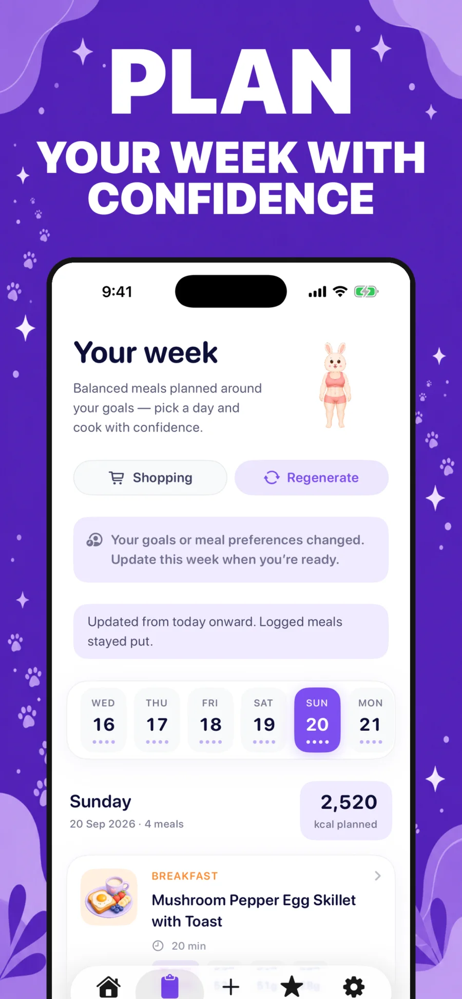
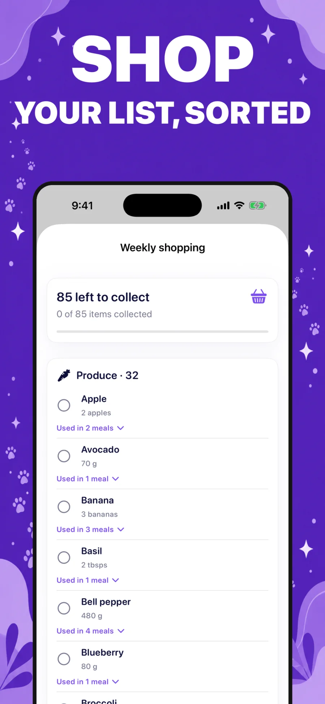
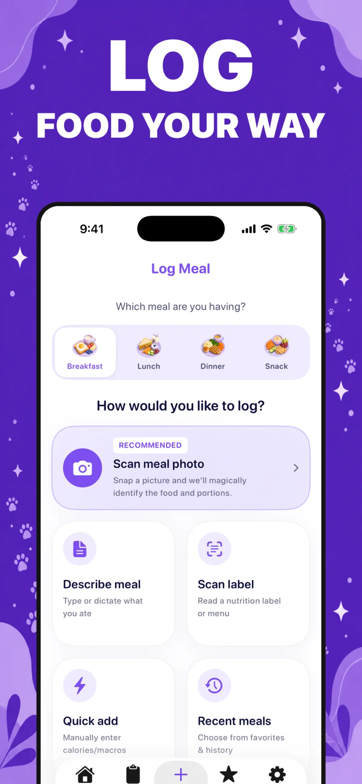
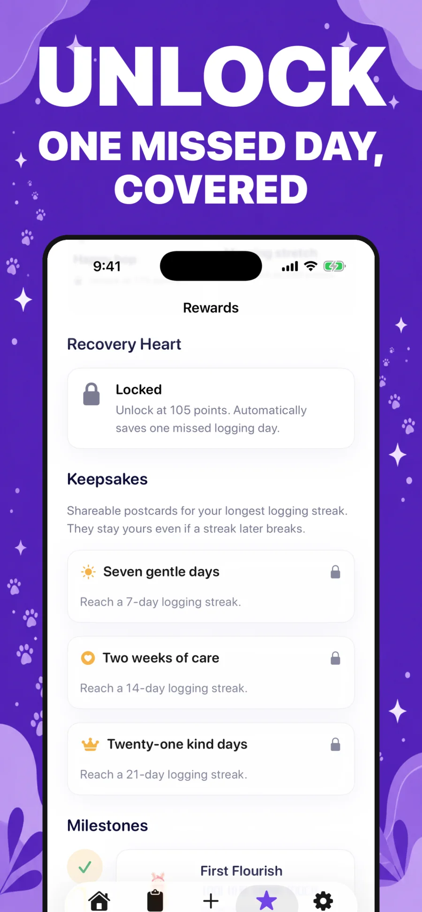

A plan made for you
Build your week around your tastes, schedule, and kitchen. Find recipes, adapt your steps, and keep a handy shopping list.
See meal planningMEALS · MOMENTUM · A LITTLE MAGIC
Meet Koky: your meal-planning, food-logging bunny buddy. Make a plan that fits your life, keep track in your own way, and let the small wins add up.
Progress at your pace. Always.

GOOD THINGS, ALL IN ONE PLACE
Everything you need to keep moving forward, with room for real life along the way.
Build your week around your tastes, schedule, and kitchen. Find recipes, adapt your steps, and keep a handy shopping list.
See meal planningDescribe a meal, snap a photo, scan a label, or add it yourself. Review every estimate and make it your own.
Explore food loggingKeep an eye on water, movement, and your daily rhythm, with optional Apple Health activity.
Find your rhythmGentle challenges, streaks, and bunny rewards make consistency feel encouraging, never all-or-nothing.
Meet your sidekick01 A WEEK THAT WORKS FOR YOU
Set your preferences, then see a week of meals shaped around the way you like to eat. Recipes include ingredients and steps, and your shopping list gathers the things you need.

02 FOOD LOGGING, YOUR WAY
Choose the way that feels easiest in the moment. Koky can help estimate a meal, and you stay in charge of reviewing and editing what gets logged.
Nutrition values are estimates. You can always review and adjust them.

03 PROGRESS THAT FEELS GOOD
Track your water and movement, notice the habits you’re building, and connect Apple Health if you want activity to show up in Koky.
04 YOUR BUNNY, YOUR PACE
Meet challenges, keep your streaks going, and earn little rewards for showing up. If a day doesn’t go to plan, Koky helps you find your next step with kindness.
One day at a time is still progress.

PLAN · LOG · GROW
Your goals can grow gently. Koky’s here for the little steps.
Download on theApp Store